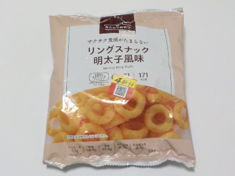

ニッポーのリングスナック明太子風味は軽いなー。
更新日 : 2026/10/24

袋はわりと大きいですが、内容量が31グラムで軽いです。カロリーは171kcal、食塩相当量0.7グラムでこっちも軽いです。
サクサクサクサクと食べてすぐになくなってしまいました。
お酒のおつまみには向かないかもね。
千葉県鎌ヶ谷市丸山1-2-25
更新日 : 2026/10/24

袋はわりと大きいですが、内容量が31グラムで軽いです。カロリーは171kcal、食塩相当量0.7グラムでこっちも軽いです。
サクサクサクサクと食べてすぐになくなってしまいました。
お酒のおつまみには向かないかもね。